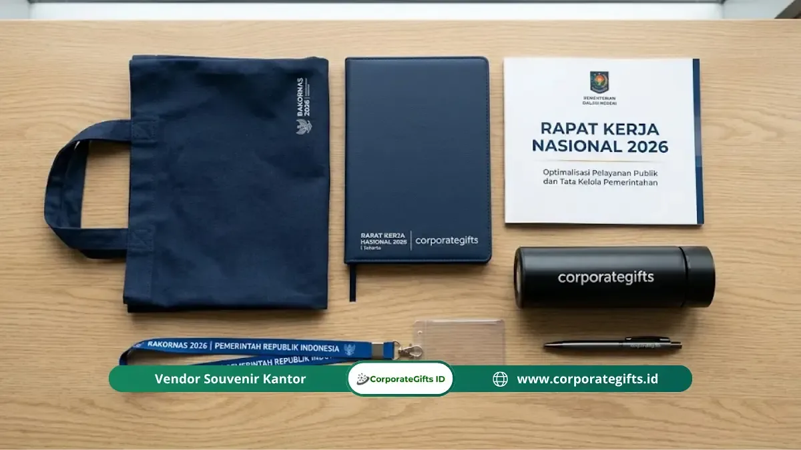

Corporate Gifts ID - Goodie bag seminar pemerintah adalah paket perlengkapan resmi peserta kegiatan kedinasan yang berisi alat tulis, materi seminar, dan cinderamata identitas instansi, disusun secara terencana sesuai pos anggaran pengadaan yang berlaku tanpa unsur kemewahan berlebih.
Dalam penyelenggaraan agenda kepemerintahan seperti bimbingan teknis (bimtek), rapat koordinasi nasional (rakornas), hingga sosialisasi regulasi, ketersediaan paket seminar kit dan goodie bag menjadi sarana krusial untuk menunjang efektivitas peserta sekaligus menjaga ketertiban administrasi pertanggungjawaban keuangan negara.
Poin Kunci Pengadaan Goodie Bag Instansi 2026:
- Isi Standar Fungsional: Mencakup tas berlogo, buku catatan (blocknote), pulpen kerja, materi modul paparan, serta lanyard identitas peserta.
- Alokasi Anggaran Wajar: Berkisar antara Rp50.000 hingga Rp250.000 per peserta, disesuaikan dengan pagu DIPA/RKA satuan kerja.
- Kepatuhan Regulasi: Wajib memenuhi prinsip efisiensi, efektivitas, transparansi, dan akuntabilitas sesuai pedoman LKPP.
- Kriteria Vendor Kredibel: Memiliki legalitas usaha lengkap (NIB, NPWP, PKP), siap faktur pajak e-Faktur, kapasitas produksi terukur, dan rekam jejak pengadaan B2B/pemerintah.
Apa Itu Goodie Bag Seminar Pemerintah?
Goodie bag seminar pemerintah adalah tas berisi perlengkapan peserta yang disiapkan oleh panitia satuan kerja (satker) instansi kementerian, lembaga pemerintah non-kementerian (LPNK), maupun organisasi perangkat daerah (OPD) untuk memfasilitasi kelancaran kegiatan dinas.
Fungsinya bukan sekadar formalitas seremonial. Goodie bag yang dirancang secara tepat membantu para peserta mendokumentasikan poin kebijakan secara rapi, mempermudah mobilitas selama workshop berlangsung, serta memperkuat citra profesionalisme institusi penyelenggara.
Berbeda dengan goodie bag promosi komersial di sektor swasta yang berfokus pada daya tarik pemasaran agresif, goodie bag seminar pemerintah memiliki 3 batasan prinsipil:
- Kewajaran Nilai per Unit: Besaran belanja barang harus berada dalam rentang standar biaya masukan (SBM) yang ditetapkan kementerian keuangan.
- Larangan Barang Mewah yang Tidak Relevan: Tidak diperkenankan menyertakan barang mewah atau item hiburan yang tidak berkaitan langsung dengan substansi acara.
- Kewajiban Akuntabilitas Dokumen: Seluruh item wajib memiliki faktur resmi, berita acara serah terima (BAST), serta daftar tanda terima peserta yang valid.
Menurut pedoman Lembaga Kebijakan Pengadaan Barang/Jasa Pemerintah (LKPP), pengadaan perlengkapan kegiatan masuk kategori belanja barang operasional yang wajib mengedepankan prinsip pengadaan terbaik demi kemaslahatan publik.
Komposisi & Komponen Isi Goodie Bag Seminar Instansi
Komposisi isi goodie bag seminar pemerintah disusun dengan menitikberatkan fungsi praktis di dalam ruang sidang maupun saat kembali ke meja kerja. Berikut adalah 6 komponen standar yang umum disediakan:

Kelengkapan seminar kit kedinasan: tas seminar kanvas/blacu, blocknote cetak cover identitas, pulpen berlogo, dan modul materi.
1. Tas Seminar Kedinasan
Tas menjadi wadah utama seluruh kelengkapan materi. Pilihan material yang banyak digunakan adalah tas spunbond tebal (non-woven 75-100 gsm), tas kanvas, blacu ramah lingkungan, maupun tas jinjing cordura dengan sablon logo atau bordir lambang instansi.
2. Alat Tulis Kantor (ATK) Esensial
Pulpen gel atau pulpen metal custom logo, pensil kayu, dan penanda teks (stabilo) merupakan instrumen inti yang dipakai langsung oleh peserta untuk menandai poin regulasi penting selama narasumber menyampaikan paparan.
3. Buku Catatan (Blocknote / Agenda Dinas)
Buku catatan jilid spiral atau lem punggung dengan sampul depan mencantumkan nama kegiatan, tahun anggaran, dan logo instansi. Halaman dalam biasanya berupa kertas bergaris dengan watermark halus lambang institusi.
4. Materi Seminar dan Bahan Paparan
Bahan substantif berupa modul panduan teknis, salinan peraturan perundang-undangan, susunan acara (rundown), serta lembar evaluasi kegiatan yang dikemas dalam map folder resmi instansi.
5. Tanda Pengenal & Lanyard Identitas
Lanyard tali kain berlogo dengan holder kartu peserta (ID card) berfungsi sebagai identifikasi kepesertaan, pembagian komisi sidang, dan akses registrasi kehadiran.
6. Souvenir Pelengkap Fungsional
Jika alokasi anggaran mencukupi, panitia dapat menyematkan produk pendukung ramah lingkungan seperti tumbler stainless minum, flashdisk kartu OTG penyimpan materi digital, atau payung lipat berlogo instansi.
Berapa Anggaran Wajar Goodie Bag Seminar Instansi (DIPA/RKA)?
Besaran anggaran goodie bag seminar instansi di Indonesia umumnya berada di kisaran Rp50.000 hingga Rp250.000 per peserta. Angka ini disesuaikan dengan hierarki acara, durasi kegiatan, serta pagu daftar isian pelaksanaan anggaran (DIPA) atau rencana kerja anggaran (RKA) satuan kerja:
- Paket Ekonomis / Sosialisasi Massal (Rp50.000 - Rp85.000): Ditujukan untuk penyuluhan publik, sosialisasi peraturan daerah, atau webinar hibrida dengan ratusan peserta. Berisi tas spunbond/blacu, blocknote softcover, pulpen standar, dan name tag.
- Paket Standar Kedinasan / Bimtek (Rp90.000 - Rp150.000): Digunakan pada bimbingan teknis 2-3 hari, pelatihan aparatur sipil negara (ASN), dan workshop regional. Berisi tas seminar kanvas/laptop tote, buku agenda hardcover, pulpen metalik, lanyard cetak digital, dan flashdisk kartu materi.
- Paket Representatif / Rakornas & Tamu VIP (Rp160.000 - Rp250.000): Diperuntukkan bagi seminar tingkat kementerian, konferensi internasional, atau rapat koordinasi pimpinan eselon. Menggunakan tas ransel seminar/tas kulit sintetis, gift set eksklusif, tumbler vacuum berlogo grafir, dan buku agenda eksekutif.
Seluruh komponen pengeluaran harus didukung kelengkapan administrasi belanja negara yang transparan:
- Surat pesanan resmi atau kontrak pengadaan langsung (SPK).
- Faktur pajak resmi (e-Faktur PPN/PPh) dari vendor berbadan hukum PKP.
- Berita acara serah terima (BAST) dan laporan hasil pemeriksaan barang.
- Daftar tanda terima barang yang ditandatangani peserta acara secara fisik atau digital.
Kriteria Memilih Vendor Pengadaan Resmi Pemerintah
Memilih mitra vendor yang memiliki rekam jejak pengadaan instansi adalah langkah paling krusial bagi Pejabat Pembuat Komitmen (PPK) maupun Pejabat Pengadaan (PP):

Kurasi isi seminar kit berkualitas tinggi yang siap diproduksi massal dengan legalitas faktur pajak lengkap.
1. Legalitas Badan Usaha Terverifikasi
Vendor harus memiliki Nomor Induk Berusaha (NIB) berbasis risiko, Nomor Pokok Wajib Pajak (NPWP) aktif, rekening bank atas nama perusahaan, dan status Pengusaha Kena Pajak (PKP) untuk kemudahan penerbitan faktur pajak. Keberadaan akun aktif di sistem LPSE/SIKAP menjadi nilai plus yang memudahkan proses pengadaan langsung.
2. Kapasitas Mesin & Kecepatan Produksi Nyata
Kapasitas harian workshop vendor harus mampu menyelesaikan pesanan ratusan hingga ribuan paket sebelum tanggal gladi bersih kegiatan. Vendor terpercaya memiliki mesin cetak UV, sablon presisi, dan mesin laser engraving mandiri seperti fasilitas di CorporateGifts.ID.
3. Ketersediaan Sampel Fisik (Proofing)
Sebelum proses produksi massal dijalankan, vendor profesional selalu menyediakan sampel fisik (sample proofing) untuk memastikan ketepatan warna Pantone logo instansi, kualitas jahitan tas, dan kerapian kemasan.
4. Fleksibilitas Termin Sesuai Mekanisme Kas Negara (SPM/SP2D)
Mekanisme pencairan anggaran APBN/APBD seringkali membutuhkan prosedur verifikasi BAST sebelum dana ditransfer melalui Kantor Pelayanan Perbendaharaan Negara (KPPN) atau Badan Keuangan Daerah. Vendor berpengalaman memahami termin ini tanpa membebani panitia secara tidak wajar.
Kesalahan Umum dalam Pengadaan Goodie Bag Instansi
Berdasarkan evaluasi pengadaan seminar kit di berbagai instansi, berikut adalah 5 jebakan yang sering memicu kendala operasional:
- Pemesanan Terlalu Mepet (Mendadak): Perencanaan H-3 sebelum acara berisiko tinggi terhadap penurunan kualitas jahitan, salah cetak logo terburu-buru, atau keterlambatan pengiriman logistik.
- Spesifikasi Teknis Tidak Tertulis Rinci: Tidak mencantumkan gramasi kain, jenis tinta, ukuran tas dalam centimeter, atau ketebalan kertas catatan dalam Kerangka Acuan Kerja (KAK).
- Melewatkan Tahap Persetujuan Sampel (Proof Approval): Langsung memproduksi ribuan unit tanpa melihat sampel fisik dapat berujung pada komplain pimpinan saat hari H.
- Memilih Vendor Ritel Tanpa Faktur Pajak: Membeli di marketplace umum tanpa dokumen legalitas berisiko ditolak oleh bendahara pengeluaran saat pemeriksaan SPJ.
- Pencatatan Distribusi Tidak Lengkap: Tidak menyediakan formulir tanda terima fisik yang ditandatangani peserta sehingga menyulitkan pembuktian saat audit internal Inspektorat.
Jenis Kegiatan Kedinasan yang Memerlukan Paket Goodie Bag
Pengalokasian anggaran seminar kit dan goodie bag secara umum dibenarkan untuk kegiatan kedinasan dengan durasi lebih dari setengah hari atau melibatkan peserta lintas instansi:
- Bimbingan Teknis (Bimtek) & Diklat Aparatur: Pelatihan peningkatan kapasitas teknis staf pemda atau kementerian.
- Rapat Koordinasi Nasional / Daerah (Rakornas / Rakorda): Sinkronisasi program kerja tahunan antar stakeholder.
- Sosialisasi Peraturan & Kebijakan Baru: Diseminasi produk hukum kepada masyarakat, akademisi, dan pelaku usaha.
- Konferensi Pers & Peluncuran Program: Penyampaian capaian kinerja lembaga kepada awak media massa.
- Kunjungan Kerja (Kunker) & Seremoni Kerjasama: Penyambutan delegasi instansi luar daerah atau mitra luar negeri.
Tabel Komparasi Goodie Bag Seminar Pemerintah vs Korporat
Tabel berikut menyajikan perbedaan mendasar antara pengadaan goodie bag instansi pemerintah dengan kebutuhan sektor korporasi swasta:
| Parameter Evaluasi | Goodie Bag Pemerintah / Instansi | Goodie Bag Korporasi Swasta | Rekomendasi CorporateGifts.ID |
|---|---|---|---|
| Sumber Pendanaan | APBN / APBD (Pos DIPA/RKA Satker) | Anggaran Marketing / HR / CSR | Sedia SPK resmi & e-Faktur PPN/PPh |
| Fokus Desain | Formal, lambang resmi, logo satker | Estetik, tren modern, brand recognition | Layout presisi sesuai Brand Guideline |
| Karakteristik Item | Fungsional, penunjang materi dinas, non-mewah | Trendy, lifestyle, gadget, premium gift | Kombinasi tas blacu + agenda + pulpen metal |
| Rentang Anggaran | Rp50.000 - Rp250.000 per peserta (SBM) | Rp100.000 - Rp750.000+ per paket | Fleksibel sesuai pagu alokasi anggaran |
| Pertanggungjawaban | Audit BPK, Inspektorat/APIP, BAST, Tanda Terima | ROI Event, kepuasan audiens, retensi klien | Dokumen administrasi 100% lengkap & rapi |
Pertanyaan Seputar Goodie Bag Pemerintah (FAQ)
Kesimpulan dan Panduan Pemesanan Cepat
Pengadaan goodie bag seminar pemerintah yang terencana secara matang mencerminkan tata kelola kegiatan kedinasan yang profesional, efisien, dan taat azas akuntabilitas publik. Dengan memilih vendor berkredibilitas tinggi dan menyusun spesifikasi teknis yang jelas, panitia penyelenggara dapat memastikan acara berjalan sukses tanpa kendala administrasi di kemudian hari.
Dapatkan penawaran harga resmi (RAB) dan konsultasi paket seminar kit instansi bersama CorporateGifts.ID. Kunjungi katalog produk seminar kit lengkap atau ajukan pengadaan langsung melalui formulir permintaan penawaran resmi sekarang juga.
Disclaimer: Pilihan spesifikasi material, opsi sablon/grafir logo, serta kelengkapan dokumen perpajakan (e-Faktur PPN/PPh) dapat disesuaikan dengan ketentuan DIPA satuan kerja Anda melalui tim konsultan CorporateGifts.ID.